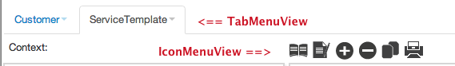
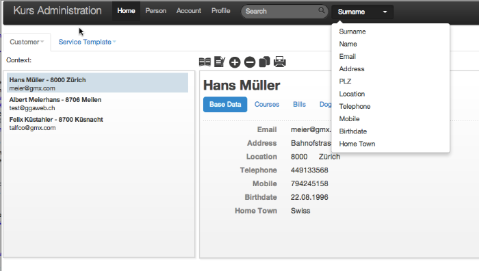
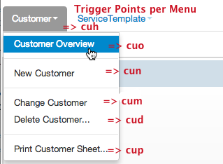

As outlined above the main functionality of the Cloudburo App Platform will run as a Javascript based application in the browser of the end user. An is using the based on the following javascript frameworks and libraries.
The following terms and abbreviations will be used
The Cloudburo App Platform is based on the open sourced and incredible powerful front-end framework Bootstrap from Twitter, which handles all the user interface related aspects as for example styles (CSS), user interface components (tool tips, popovers, tabs, alerts, page header), javascript plugins and so on.
Backbone is a great platform for writing client side applications. Backbone.js gives structure to web applications by providing models with key-value binding and custom events, collections with a rich API of enumerable functions, views with declarative event handling, and connects it all to your existing API over a RESTful JSON interface. It’s one of the cornerstone client side libraries used in the Cloudburo App Platform.
The Bacbkbone.ModelBinder class is a great utility in order to bind backbone model attributes to:
<span>, <div> etc.<input>, <textarea> etc. As the creator and github user theironcook described
The ModelBinder class helped me remove a lot of cluttered boilerplate code that existed to synchronize my models and views. As my application became more asynchronous, the ModelBinder saves me from a lot of pain by automatically displaying model attributes in the view as they are asynchronously loaded. Hopefully you’ll find the ModelBinder useful too.
It’s very useful and I used it to manage all my input forms in a generic way (more later).
The Stitch Package Creator, which will bundle all Javascript Libraries in one file application.js and creates an App class which will be instantiated in the browser window after the HTML is loaded.
Looking in a browser window at the source html of the Cloudburo App Platform you will see only a minimal HTML document below 20 lines of code:
<html>
<head>
<meta charset=utf-8>
<title>Cloudburo App Center</title>
<link rel="stylesheet" type="text/css" href="/application.css">
<link rel="stylesheet" type="text/css" href="/bootstrap.css">
<script src="/application.js" type="text/javascript" charset="utf-8" />
<script type="text/javascript" charset="utf-8">
document.addEventListener("DOMContentLoaded",
function(){ (require("app")).init();},
false
);
</script>
</script>
</head>
<body></body>
</html>
So the complete control is handed over to the javascript App application, after this minimal HTML is loaded in the browser window (includes the download of the application javascript code).
As described above the Appclass is the main class which instantiates the overall application.
MainTabMenuView and the IconbarViewAppRouter (a Backbone Router) and delegates the control to it.# Step 1: Retrieve the main page template
$.get "/views/templates/main.show", (data) =>
$('body').append(data)
tmpl = document.getElementById('tmpl_mainpage').firstChild
tmpl1 = _und.template tmpl.textContent
$("body").append tmpl1
'home' : 'Home',
'home_person' : 'Person',
'home_account' : 'Account'
'home_profile' : 'Profile'
'search' : 'Search',
'help' : 'Help',
'help_manual' : 'Online Manual'
'help_faq' : 'FAQ'
'help_support' : 'Support Request'
TabMenuView = require("views/base/tabMenuView")
tabMenuView = new TabMenuView
tabMenuView.render()
IconbarView = require("views/base/iconbarView")
iconbarView = new IconbarView
iconbarView.render()
AppRouter = require("./appRouter")
window.appRouter = new AppRouter()
window.app = this;
Backbone.history.start();
The global variable window.BusinessObjectDef defines the overall configuration of the application concerning available BDO’s to the end user.
window.BusinessObjectDef =
customers :
mainRoute: "customers"
dialogAttr1: "surname"
dialogAttr2: "name"
servicetemplates:
mainRoute: "serviceTemplates"
dialogAttr1: "name"
dialogAttr2: ""
In the example above the application will offer the BDO types customers and serviceTemplates.
In the final version the assembly of BDO types offered to a customer will be dependent on the subscription level.
The Appclass will hold a global cache variable window.cache = new Array() which will cache Backbone models or views already opened and used during a user session.
This event can be either triggered manually by user typing in an URL in the broweser window or by calling the window.appRouter.navigateoperation, which is an instantiation of the Backbone Router class (holding all routes of the application.)
Entering a browser URL in the form of
http://cloudburo.ch/#customers
and hitting return, will trigger the AppRouter dispatcher.
This event will be triggered in case the user wants to work with another BDO type (e.g. working with the domain objects userinstead of customer). That means the detail view, as well as the list view will be switched.
This event is triggered for example when he clicks on a menu tab (customeror user) or any other icon associated via a BDO type.
This will trigger a window.appRouter.navigate operation (details refer to link)
When a record is deleted the view is refreshed by calling
window.appRouter.navigate @viewNameL , {trigger: true}
When a cancel button is pressed and no previous entry is available.
Our AppRouterclass is derived from the Backbone.Routerand is responsible to dispatch navigation changes which are reflected in the URL.
A navigation change is either happening when the user types a URL into the browser and hits return oder programmatically in our javascript application, e.g. by a menu tab click event (see above).
Refer to the following registered URL:
routes:
"" : "root"
"customers" : "listCustomer"
"customers/" : "listCustomer"
"customers/:id" : "detailCustomer"
"customers/:id/modify" : "modifyCustomer"
"servicetemplates" : "listServiceTemplate"
"servicetemplates/" : "listServiceTemplate"
"servicetemplates/:id" : "detailServiceTemplate"
"servicetemplates/:id/modify": "modifyServiceTemplate"
Now each triggering of an operation will result in an action similiar like
listCustomer: ->
log.info "AppRouter.listCustomer"
@switchBusinessObjectEvent "customers"
@renderListView("Customer")
detailCustomer: (id) ->
@switchBusinessObjectEvent "customers"
log.info "Approuter.detailCustomer: /customers/id called with id '"+id+"'"
@renderDetailView("Customer",id,window.viewStateView )
The Approuter.switchBusinessObjectoperation will be call by routes operation and do the following step:
currentBusinessObject event notifying other components that the BDO were changed and the views replaced.The code looks like:
switchBusinessObjectEvent : (busObj) =>
busObjShort = busObj.substring(0,busObj.length-1)
if $("#tmpl_"+busObjShort+"_contentsheet").size() == 0
$.get "/views/templates/"+busObj+".show", (data1) =>
log.debug "Approuter.switchBusinessObjectEvent: Template loaded"
$('body').append(data1)
window.Notifier.trigger(window.Notifier.eventCurrentBusinessObject, busObj)
else
window.Notifier.trigger(window.Notifier.eventCurrentBusinessObject, busObj)
For more details refert to link
The BaseMenuViewclass (views/base/baseMenuView.coffee) installs click listeners which will be triggered in case the user clicks on <a>element in the menu or icon bar more details.
events:
'click #cuh': 'switchMenuTab'
'click #cuo': 'showView'
'click #cum': 'modifyView'
'click #cun': 'newView'
'click #cud': 'deleteView'
'click #cuc': 'copyView'
'click #cup': 'printView'
The BaseMenuView is a actually the parent class of TabMenuView class, as well as the IconMenuView class. The icon bar will provide the same click functionality as the tab menu (cum-cuh).

The main functionality of the BaseMenuView operations are to trigger a global view state event upon which consumers may react.
showView: ->
log.debug "BaseMenuView.showView"
window.Notifier.trigger window.Notifier.eventCurrentViewState, window.viewStateView
@postClickProcessing()
return false
modifyView: ->
log.debug "BaseMenuView.modifyView"
window.Notifier.trigger window.Notifier.eventCurrentViewState, window.viewStateModify
@postClickProcessing()
return false
The postClickProcessingoperation does by default nothing but may overwritten by a inherited class, e.g. the TabMenuViewclass is overwriting this class in order to close the drop down menu again
postClickProcessing: ->
log.debug "TabMenuView.postClickProcessing" , @busObj
$('li[class~="open"]').removeClass 'open'
A special case is the switchMenuTab operation, which handles the event when user clicks on a tab mennu entry (drop down menu is closed)
switchMenuTab: (event )->
a = event.target.parentElement.getAttribute("id")
bobj = a.substring(0,a.length-3)
log.debug 'BaseMenuView.switchMenuTab: "'+bobj+'" current scope on "'+@busObj+'"'
if bobj != @busObj
@busObj = bobj
window.appRouter.navigate("/"+@busObj,{trigger: true})
<li id="servicetemplates-dp" class="dropdown"> and by getting rid of the last three characters. @busObj) if not the AppRouter.navigate operation will be called.Even which will triggered in case the Business Object scope will change, i.e. the user changes from the business object ‘customer’ to the ‘order’ one. As well as a initial Browser opening with a specific URL.
See above this event will be triggered as a result of a of renderDetailView request originiated by the switchMenutTab or a browser opening with a specific URL.
Will consume the event. In case the passed in business object domain type is different the menu tab must be adjusted.
Extends the BaseMenuView will control the toggling of TabMenu entries (on/off)
The navigation bar holds the search input field, which has a selection dropdown attached which allows to select the search field. Dependent on the business object domain type shown on the screen (in the example below the Customer) the drop down selection values will be adjusted accordingly.

Will be triggered in case the detail view model was changed to a new one. This can be either triggered by
changeBusinessScope event happened beforehand due to a initial browser window opening or the user changed scope via menu or tab changeWill handle the constellation 1 and 2 of the above event triggering.
Will handle constellation 3 of the above event triggering. This is method will also triggering the eventCurrentViewState
Will be triggered in case the user clicks on a list entry in the List View. The Event Trigger is configurable (RootListItemViewis used in multiple list view) and passed in during creation of a list item.
The operation changeModel will be triggered, which will check if the passed in target model has to be replaced or not and takes over kicks off rendering part.
The operation changeModel will be triggered which will highlight the entry. the Event Trigger is configurable and passed in during creation of a list item. Analogue to the publishing even above on RootListItemView.
If the user selects the modify entry or new entry the event will be triggered
Depending on the state will close and reopen the view
currentViewStateEvent: (viewState) =>
log.debug "RootView.currentViewStateEvent "+@state+" - "+viewState
if @state != viewState
@state = viewState
@close()
@render()
Will be triggered when the the content tabs in a view are changed (i.e. the so-called pill list)
The rendering of the root view will trigger the event
The operation will toggle the content tabs.
The AppRouterclass provides a set of functions to manage and rendering the Views of the application, theres are
newInstancerenderViewsrenderListViewrenderDetailViewThe newInstance is used for the creation of Views and Model and will make use of caching, i.e. any view/model already opened will be cached during the user sessions.
newInstance: (strClass) ->
# Let's cache the Views
if window.cache[strClass] != undefined
return window.cache[strClass]
else
args = Array.prototype.slice.call arguments, 1
clsClass = eval strClass
F = () -> return clsClass.apply this, args
F.prototype = clsClass.prototype
window.cache[strClass] = new F()
return window.cache[strClass]
The main dropdown menu will consist of a list of all BDO’s with its associated functions.
The menu part of each BDO is defined as part of the views/templates/main.show.tpland consists of HTML fragments like
<script type="text/template" id="tmpl_customers_dropdownmenu">
<li id="customers-dp" class="dropdown">
<a id="cuh" href="#" class="dropdown-toggle" data-toggle="dropdown"><%= customer_menu_header %><b class="caret"></b></a>
<ul class="dropdown-menu">
<li><a id="cuo" href="" data-toggle="tab"><%= customer_menu_overview %></a></li>
<li class="divider"></li>
<li><a id="cun" href="" data-toggle="tab"><%= customer_menu_new %></a></li>
<li class="divider"></li>
<li><a id="cum" href="" data-toggle="tab"><%= customer_menu_modify %></a></li>
<li><a id="cud" href="" data-toggle="tab"><%= customer_menu_delete %></a></li>
<li class="divider"></li>
<li><a id="cup" href="" data-toggle="tab"></span><%= customer_menu_print %></a></li>
</ul>
</li>
</script>
<script type="text/template" id="tmpl_servicetemplates_dropdownmenu">
<li id="servicetemplates-dp" class="dropdown">
<a id="cuh" href="#" class="dropdown-toggle" data-toggle="dropdown"><%= servicetemplate_menu_header %><b class="caret"></b></a>
<ul class="dropdown-menu">
<li><a id="cuo" href="" data-toggle="tab"><%= servicetemplate_menu_overview %></a></li>
<li class="divider"></li>
<li><a id="cun" href="" data-toggle="tab"><%= servicetemplate_menu_new %></a></li>
<li class="divider"></li>
<li><a id="cum" href="" data-toggle="tab"><%= servicetemplate_menu_modify %></a></li>
<li><a id="cud" href="" data-toggle="tab"><%= servicetemplate_menu_delete %></a></li>
<li class="divider"></li>
<li><a id="cup" href="" data-toggle="tab"></span><%= servicetemplate_menu_print %></a></li>
</ul>
</li>
</script>
Each of these fragment blocks are identifiable and loadable via the identifier <businessdomainobject>s-dp, e.g. <li id="customers-dp" class="dropdown"> p. There are predefined trigger points defined attached to the <a>element in the fragment.

cuh: Is the root trigger point for a tab switch, i.e. the current BDO screens will be replaced through the new one and the drop down menu will be displayed.cuo: Open Overview Screen, which shows a read only view of a dedicated BDO (the selected one, by defaul the first one) cun: New BDO Screencum: Modify BDO Screencud: Delete BDO Screencup: Print BDO ScreenAs described above the BaseMenuViewclass will get triggered in case the user wants to change the view state, for example to create, modify or delete a BDO. The class will trigger a global event in the form of window.Notifier.trigger window.Notifier.eventNewRecord which will be consumed by the RootViewclass in order to do the view state change.
It’s important to mention that the application will cache view instances during a user session. That means in case the user will trigger a tab menu change the application will check in its cache if the view was already opened beforehand or not. In case the view was already used beforehand the cached instance will be visualized immediately (this handled in the AppRout.newInstance method).
In context of a event trigger based applications some special considerations must be taken. E.g. any view state change trigger event will be consumed by the actual visible view but also all the cached ones which are currently hidden, BUT only the visible view should react on the view state change. That means the view must know if he is the actual visible one or not.
This boolean information will be derived through window.Notifier.eventChangeModel events which are consumed by RootViewclass as well.
Creating a object via reflection
newInstance: (strClass) ->
args = Array.prototype.slice.call arguments, 1
clsClass = eval strClass
F = () -> return clsClass.apply this, args
F.prototype = clsClass.prototype
return new F()
JavaScript lacks a built-in function for getting the exact class names of object instances. This function will retrieve the name via the constructor.
getObjectClass: (obj) ->
if (obj && obj.constructor && obj.constructor.toString)
arr = obj.constructor.toString().match(/function\s*(\w+)/);
if (arr && arr.length == 2)
return arr[1];
return undefined;
©2015 - Dev@Cloudburo
Powered by Cloudburo Curation Engine